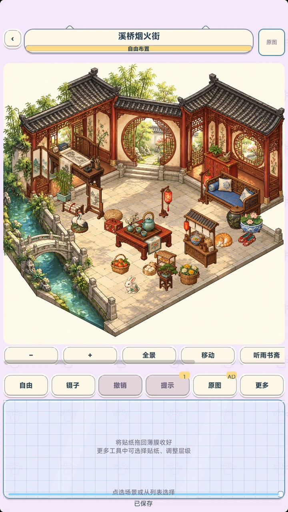

从揭起到落位的贴纸触感
透明薄膜、镊子、悬浮预览与落位吸附共同解释拖放过程，处理手指遮挡和目标辨识。
TAPTAP MAKER / 个人 AI 游戏实践
像素贴纸 / 场景布置 / 轻松收纳
用小镊子从透明薄膜上揭起贴纸，把家具和小物贴成温暖房间。五大主题、45 个场景与 600 件贴纸，完成目标后继续自由布置。

TapTap 公开测试 · 2026.10.25 核对
GAMEPLAY / 核心体验
观察场景，从分套贴纸中选择物件，拖动并在合适位置松手吸附。公开介绍已扩展到五大主题45场景、600件贴纸，其中大场景支持缩放、平移和分区查看。完成后可移动物件、调整层级及撤销；提示、原图和关卡页解锁分别设置。
TAPTAP GALLERY / 游戏展示图
以下来自 2026.10.25 核对的 TapTap 公开游戏页展示图；保留原图，部分含商店宣传文案，不冒充本次重新运行游戏的实机录制。
点击任意截图可查看原图。 多张画面可左右滑动，也可聚焦图库后使用方向键浏览。


DESIGN / 规则与取舍
透明薄膜、镊子、悬浮预览与落位吸附共同解释拖放过程，处理手指遮挡和目标辨识。
五大主题提供不同环境；大场景加入缩放、平移和分区查看，让更多物件仍可逐步阅读。
完成场景后继续调整位置和层级，保留撤销及作品进度，让还原目标与个人布置相互衔接。
不同辅助入口对应不同需求，公开介绍说明自愿广告与免费提示；页面信息不作为广告效果或存档稳定性的实测证明。
MY PRACTICE / 项目推进
通过 AI 协作从首关验证推进到像素场景和连续关卡，统筹原创场景、逐项贴纸素材与统一视觉方向。围绕贴纸拖放、磁吸判定、层级遮挡和作品保存持续迭代，并按反馈调整首页信息层次及提示方式。美术为 AI 素材生成与整理，不将其写作人工逐像素绘制。
TAPTAP / 游戏入口
试玩入口与当前可玩版本以 TapTap 游戏页为准；公开介绍中的功能和数量属于开发者在平台展示的信息。